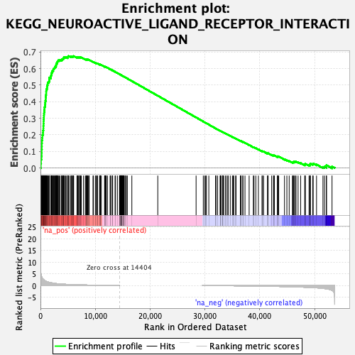

| | | Dataset | cond1.vs.cond3 |
| Phenotype | NoPhenotypeAvailable |
| Upregulated in class | na_pos |
| GeneSet | KEGG_NEUROACTIVE_LIGAND_RECEPTOR_INTERACTION |
| Enrichment Score (ES) | 0.67542154 |
| Normalized Enrichment Score (NES) | 2.1408994 |
| Nominal p-value | 0.0 |
| FDR q-value | 0.0 |
| FWER p-Value | 0.0 |
Table: GSEA Results Summary

Fig 1: Enrichment plot: KEGG_NEUROACTIVE_LIGAND_RECEPTOR_INTERACTION
Profile of the Running ES Score & Positions of GeneSet Members on the Rank Ordered List
| SYMBOL | RANK IN GENE LIST | RANK METRIC SCORE | RUNNING ES | CORE ENRICHMENT | | 1 | GLP2R | 79 | 5.111 | 0.0265 | Yes |
| 2 | EDNRB | 108 | 4.687 | 0.0516 | Yes |
| 3 | PTGER1 | 199 | 3.866 | 0.0711 | Yes |
| 4 | NPY1R | 230 | 3.656 | 0.0905 | Yes |
| 5 | HTR4 | 234 | 3.633 | 0.1103 | Yes |
| 6 | GRIK2 | 250 | 3.502 | 0.1292 | Yes |
| 7 | VIPR2 | 257 | 3.456 | 0.1480 | Yes |
| 8 | LPAR3 | 269 | 3.393 | 0.1664 | Yes |
| 9 | ADRB3 | 334 | 3.076 | 0.1820 | Yes |
| 10 | GLRB | 355 | 3.014 | 0.1981 | Yes |
| 11 | GABRB3 | 448 | 2.769 | 0.2115 | Yes |
| 12 | S1PR3 | 469 | 2.710 | 0.2260 | Yes |
| 13 | TBXA2R | 527 | 2.582 | 0.2390 | Yes |
| 14 | BDKRB1 | 533 | 2.570 | 0.2530 | Yes |
| 15 | CYSLTR1 | 556 | 2.531 | 0.2664 | Yes |
| 16 | APLNR | 564 | 2.524 | 0.2801 | Yes |
| 17 | F2R | 568 | 2.512 | 0.2938 | Yes |
| 18 | ADRA1B | 619 | 2.416 | 0.3061 | Yes |
| 19 | GRPR | 630 | 2.387 | 0.3190 | Yes |
| 20 | PTGFR | 650 | 2.344 | 0.3314 | Yes |
| 21 | GHR | 677 | 2.288 | 0.3435 | Yes |
| 22 | ADCYAP1R1 | 716 | 2.219 | 0.3549 | Yes |
| 23 | GABBR2 | 741 | 2.184 | 0.3664 | Yes |
| 24 | S1PR5 | 815 | 2.060 | 0.3763 | Yes |
| 25 | P2RY14 | 858 | 2.009 | 0.3865 | Yes |
| 26 | NPY2R | 887 | 1.956 | 0.3967 | Yes |
| 27 | GRIN2A | 908 | 1.931 | 0.4068 | Yes |
| 28 | CALCRL | 965 | 1.869 | 0.4160 | Yes |
| 29 | HTR7 | 967 | 1.862 | 0.4262 | Yes |
| 30 | P2RY6 | 993 | 1.841 | 0.4358 | Yes |
| 31 | GRM8 | 1025 | 1.815 | 0.4451 | Yes |
| 32 | GABRD | 1042 | 1.802 | 0.4547 | Yes |
| 33 | S1PR4 | 1047 | 1.792 | 0.4644 | Yes |
| 34 | PTH1R | 1070 | 1.769 | 0.4737 | Yes |
| 35 | PTGDR | 1169 | 1.671 | 0.4810 | Yes |
| 36 | CHRNA1 | 1185 | 1.660 | 0.4898 | Yes |
| 37 | P2RX1 | 1219 | 1.624 | 0.4981 | Yes |
| 38 | VIPR1 | 1305 | 1.561 | 0.5050 | Yes |
| 39 | ADRB2 | 1323 | 1.545 | 0.5132 | Yes |
| 40 | NPY5R | 1466 | 1.438 | 0.5184 | Yes |
| 41 | NMUR1 | 1570 | 1.373 | 0.5239 | Yes |
| 42 | C5AR1 | 1594 | 1.358 | 0.5309 | Yes |
| 43 | PTGIR | 1604 | 1.353 | 0.5382 | Yes |
| 44 | F2RL2 | 1616 | 1.348 | 0.5454 | Yes |
| 45 | GABRA2 | 1899 | 1.194 | 0.5466 | Yes |
| 46 | PRL | 1908 | 1.188 | 0.5530 | Yes |
| 47 | LEPR | 1933 | 1.176 | 0.5589 | Yes |
| 48 | GRIK4 | 1972 | 1.156 | 0.5645 | Yes |
| 49 | CNR1 | 2046 | 1.125 | 0.5693 | Yes |
| 50 | CTSG | 2069 | 1.116 | 0.5750 | Yes |
| 51 | GLRA3 | 2090 | 1.102 | 0.5807 | Yes |
| 52 | P2RY8 | 2165 | 1.074 | 0.5852 | Yes |
| 53 | CALCR | 2319 | 1.008 | 0.5878 | Yes |
| 54 | AVPR1A | 2324 | 1.007 | 0.5932 | Yes |
| 55 | HRH1 | 2372 | 0.992 | 0.5978 | Yes |
| 56 | HRH4 | 2484 | 0.954 | 0.6009 | Yes |
| 57 | GRIN1 | 2576 | 0.921 | 0.6043 | Yes |
| 58 | ADRA1D | 2642 | 0.901 | 0.6080 | Yes |
| 59 | P2RY13 | 2684 | 0.888 | 0.6121 | Yes |
| 60 | C3AR1 | 2835 | 0.840 | 0.6139 | Yes |
| 61 | NPBWR1 | 2842 | 0.839 | 0.6183 | Yes |
| 62 | EDNRA | 2851 | 0.838 | 0.6228 | Yes |
| 63 | GRIA4 | 2900 | 0.825 | 0.6264 | Yes |
| 64 | HTR1B | 2912 | 0.821 | 0.6307 | Yes |
| 65 | BDKRB2 | 3022 | 0.785 | 0.6329 | Yes |
| 66 | LPAR1 | 3069 | 0.775 | 0.6363 | Yes |
| 67 | F2RL3 | 3089 | 0.771 | 0.6402 | Yes |
| 68 | MC4R | 3117 | 0.765 | 0.6438 | Yes |
| 69 | TACR2 | 3229 | 0.740 | 0.6458 | Yes |
| 70 | P2RY1 | 3263 | 0.734 | 0.6492 | Yes |
| 71 | CHRNB4 | 3461 | 0.699 | 0.6493 | Yes |
| 72 | P2RY2 | 3567 | 0.680 | 0.6511 | Yes |
| 73 | THRB | 3824 | 0.634 | 0.6498 | Yes |
| 74 | NPFFR2 | 3863 | 0.628 | 0.6525 | Yes |
| 75 | GRID1 | 3902 | 0.621 | 0.6552 | Yes |
| 76 | MAS1 | 4024 | 0.599 | 0.6562 | Yes |
| 77 | GZMA | 4075 | 0.591 | 0.6585 | Yes |
| 78 | NMBR | 4184 | 0.573 | 0.6596 | Yes |
| 79 | GLP1R | 4244 | 0.564 | 0.6616 | Yes |
| 80 | P2RX4 | 4251 | 0.562 | 0.6645 | Yes |
| 81 | GRM3 | 4266 | 0.560 | 0.6673 | Yes |
| 82 | CHRNB1 | 4421 | 0.536 | 0.6674 | Yes |
| 83 | GLRA2 | 4622 | 0.510 | 0.6664 | Yes |
| 84 | GRM1 | 4688 | 0.504 | 0.6680 | Yes |
| 85 | HTR2A | 4963 | 0.471 | 0.6654 | Yes |
| 86 | GRID2 | 4979 | 0.469 | 0.6677 | Yes |
| 87 | GABRA1 | 4981 | 0.469 | 0.6702 | Yes |
| 88 | CHRM4 | 5016 | 0.465 | 0.6722 | Yes |
| 89 | PTAFR | 5082 | 0.457 | 0.6734 | Yes |
| 90 | MCHR1 | 5110 | 0.455 | 0.6754 | Yes |
| 91 | TSPO | 5362 | 0.426 | 0.6730 | No |
| 92 | MC5R | 5578 | 0.406 | 0.6712 | No |
| 93 | PLG | 5658 | 0.399 | 0.6719 | No |
| 94 | NR3C1 | 5710 | 0.393 | 0.6731 | No |
| 95 | SSTR3 | 5867 | 0.377 | 0.6723 | No |
| 96 | UTS2R | 5947 | 0.370 | 0.6728 | No |
| 97 | P2RX6 | 6004 | 0.364 | 0.6738 | No |
| 98 | P2RY10 | 6056 | 0.360 | 0.6748 | No |
| 99 | AGTR2 | 6659 | 0.311 | 0.6652 | No |
| 100 | GABRG3 | 6714 | 0.309 | 0.6659 | No |
| 101 | GHSR | 6727 | 0.309 | 0.6674 | No |
| 102 | PRLHR | 6744 | 0.307 | 0.6687 | No |
| 103 | DRD1 | 6892 | 0.302 | 0.6676 | No |
| 104 | GALR3 | 6971 | 0.296 | 0.6678 | No |
| 105 | MTNR1A | 7168 | 0.284 | 0.6657 | No |
| 106 | GRIA2 | 7173 | 0.283 | 0.6671 | No |
| 107 | HRH3 | 7218 | 0.280 | 0.6679 | No |
| 108 | HTR1E | 7331 | 0.272 | 0.6672 | No |
| 109 | FPR3 | 7452 | 0.264 | 0.6664 | No |
| 110 | PTGER4 | 7844 | 0.241 | 0.6604 | No |
| 111 | CHRNA6 | 8173 | 0.224 | 0.6555 | No |
| 112 | SSTR2 | 8311 | 0.216 | 0.6541 | No |
| 113 | ADORA1 | 8330 | 0.215 | 0.6550 | No |
| 114 | GIPR | 8445 | 0.207 | 0.6540 | No |
| 115 | HTR1F | 8494 | 0.204 | 0.6542 | No |
| 116 | GRIA1 | 8527 | 0.202 | 0.6547 | No |
| 117 | CYSLTR2 | 8604 | 0.198 | 0.6544 | No |
| 118 | S1PR2 | 8702 | 0.191 | 0.6536 | No |
| 119 | CHRM1 | 8842 | 0.183 | 0.6520 | No |
| 120 | GABRA5 | 8883 | 0.180 | 0.6522 | No |
| 121 | MTNR1B | 9583 | 0.173 | 0.6401 | No |
| 122 | MCHR2 | 9685 | 0.169 | 0.6391 | No |
| 123 | GABRG1 | 10080 | 0.169 | 0.6326 | No |
| 124 | HTR5A | 10082 | 0.169 | 0.6335 | No |
| 125 | CHRM3 | 10244 | 0.162 | 0.6314 | No |
| 126 | CHRNA7 | 10377 | 0.155 | 0.6298 | No |
| 127 | DRD2 | 10388 | 0.154 | 0.6304 | No |
| 128 | AVPR2 | 10786 | 0.134 | 0.6237 | No |
| 129 | P2RX5 | 10830 | 0.131 | 0.6237 | No |
| 130 | TSHB | 10899 | 0.130 | 0.6231 | No |
| 131 | OPRK1 | 10947 | 0.127 | 0.6229 | No |
| 132 | P2RX7 | 10956 | 0.126 | 0.6234 | No |
| 133 | ADRA1A | 11101 | 0.118 | 0.6214 | No |
| 134 | NPY4R | 11691 | 0.092 | 0.6109 | No |
| 135 | LPAR6 | 11771 | 0.089 | 0.6099 | No |
| 136 | GABRQ | 11778 | 0.089 | 0.6102 | No |
| 137 | OPRL1 | 11795 | 0.088 | 0.6104 | No |
| 138 | CHRNA4 | 11834 | 0.086 | 0.6102 | No |
| 139 | ADRA2B | 11981 | 0.079 | 0.6079 | No |
| 140 | CRHR2 | 12003 | 0.078 | 0.6079 | No |
| 141 | LPAR4 | 12221 | 0.069 | 0.6042 | No |
| 142 | GRIN3B | 12715 | 0.062 | 0.5953 | No |
| 143 | CRHR1 | 12734 | 0.061 | 0.5953 | No |
| 144 | MC2R | 12821 | 0.060 | 0.5941 | No |
| 145 | CCKBR | 13105 | 0.053 | 0.5890 | No |
| 146 | GRIA3 | 13117 | 0.052 | 0.5891 | No |
| 147 | AVPR1B | 13168 | 0.050 | 0.5885 | No |
| 148 | P2RX3 | 13606 | 0.032 | 0.5804 | No |
| 149 | RXFP1 | 13692 | 0.028 | 0.5790 | No |
| 150 | HRH2 | 14033 | 0.014 | 0.5727 | No |
| 151 | GABRA3 | 14416 | 0.000 | 0.5656 | No |
| 152 | PTGER3 | 14434 | 0.000 | 0.5652 | No |
| 153 | CHRNA3 | 14473 | 0.000 | 0.5645 | No |
| 154 | GABRP | 14489 | 0.000 | 0.5642 | No |
| 155 | GRIK5 | 14551 | 0.000 | 0.5631 | No |
| 156 | GHRHR | 14555 | 0.000 | 0.5630 | No |
| 157 | GABRA4 | 14582 | 0.000 | 0.5626 | No |
| 158 | GABRG2 | 14608 | 0.000 | 0.5621 | No |
| 159 | TACR1 | 14614 | 0.000 | 0.5620 | No |
| 160 | OPRD1 | 14624 | 0.000 | 0.5618 | No |
| 161 | GRM4 | 14685 | 0.000 | 0.5607 | No |
| 162 | PTGER2 | 14695 | 0.000 | 0.5605 | No |
| 163 | NPBWR2 | 14696 | 0.000 | 0.5605 | No |
| 164 | FSHB | 14760 | 0.000 | 0.5594 | No |
| 165 | SSTR4 | 14768 | 0.000 | 0.5592 | No |
| 166 | TAAR5 | 14798 | 0.000 | 0.5587 | No |
| 167 | CHRND | 14799 | 0.000 | 0.5587 | No |
| 168 | HTR2B | 14801 | 0.000 | 0.5587 | No |
| 169 | CSH1 | 14810 | 0.000 | 0.5585 | No |
| 170 | HCRTR2 | 14818 | 0.000 | 0.5584 | No |
| 171 | AGTR1 | 14877 | 0.000 | 0.5573 | No |
| 172 | GABRB2 | 14885 | 0.000 | 0.5572 | No |
| 173 | GABRR1 | 14889 | 0.000 | 0.5571 | No |
| 174 | TAAR2 | 14892 | 0.000 | 0.5571 | No |
| 175 | HTR2C | 14896 | 0.000 | 0.5570 | No |
| 176 | CHRNB3 | 14898 | 0.000 | 0.5570 | No |
| 177 | CCKAR | 15033 | 0.000 | 0.5545 | No |
| 178 | GRIK3 | 15044 | 0.000 | 0.5543 | No |
| 179 | GALR1 | 15093 | 0.000 | 0.5534 | No |
| 180 | DRD5 | 15162 | 0.000 | 0.5521 | No |
| 181 | TACR3 | 15172 | 0.000 | 0.5520 | No |
| 182 | S1PR1 | 15195 | 0.000 | 0.5515 | No |
| 183 | FPR1 | 15196 | 0.000 | 0.5515 | No |
| 184 | GRIK1 | 15201 | 0.000 | 0.5515 | No |
| 185 | HTR1A | 15408 | 0.000 | 0.5476 | No |
| 186 | CHRM2 | 15465 | 0.000 | 0.5466 | No |
| 187 | GALR2 | 15523 | 0.000 | 0.5455 | No |
| 188 | CNR2 | 15763 | 0.000 | 0.5410 | No |
| 189 | CHRNG | 15827 | 0.000 | 0.5398 | No |
| 190 | PRSS1 | 16668 | 0.000 | 0.5241 | No |
| 191 | TAAR9 | 21400 | 0.000 | 0.4355 | No |
| 192 | PRSS2 | 28388 | 0.000 | 0.3046 | No |
| 193 | GPR50 | 29702 | -0.004 | 0.2800 | No |
| 194 | TAAR6 | 29957 | -0.008 | 0.2753 | No |
| 195 | DRD3 | 30142 | -0.008 | 0.2719 | No |
| 196 | RXFP2 | 30267 | -0.008 | 0.2696 | No |
| 197 | GH1 | 30709 | -0.008 | 0.2614 | No |
| 198 | TAAR8 | 31984 | -0.008 | 0.2376 | No |
| 199 | GABRA6 | 31985 | -0.008 | 0.2376 | No |
| 200 | GH2 | 31991 | -0.008 | 0.2376 | No |
| 201 | GRM6 | 32317 | -0.017 | 0.2316 | No |
| 202 | GABRB1 | 32788 | -0.035 | 0.2230 | No |
| 203 | TSHR | 32796 | -0.036 | 0.2230 | No |
| 204 | ADORA2B | 32847 | -0.038 | 0.2223 | No |
| 205 | PTH2R | 32958 | -0.040 | 0.2205 | No |
| 206 | ADRB1 | 33225 | -0.049 | 0.2158 | No |
| 207 | FPR2 | 33259 | -0.050 | 0.2154 | No |
| 208 | TAAR1 | 33277 | -0.051 | 0.2154 | No |
| 209 | MLNR | 33281 | -0.051 | 0.2156 | No |
| 210 | GRIN2C | 33429 | -0.056 | 0.2132 | No |
| 211 | HTR6 | 33787 | -0.069 | 0.2069 | No |
| 212 | LEP | 33846 | -0.072 | 0.2062 | No |
| 213 | CGA | 34166 | -0.080 | 0.2006 | No |
| 214 | OPRM1 | 34233 | -0.081 | 0.1998 | No |
| 215 | F2RL1 | 34623 | -0.093 | 0.1931 | No |
| 216 | F2 | 35011 | -0.103 | 0.1864 | No |
| 217 | CHRNA9 | 35157 | -0.109 | 0.1842 | No |
| 218 | GCGR | 35255 | -0.113 | 0.1830 | No |
| 219 | SSTR5 | 35599 | -0.120 | 0.1773 | No |
| 220 | LTB4R | 35679 | -0.124 | 0.1765 | No |
| 221 | PARD3 | 36463 | -0.152 | 0.1626 | No |
| 222 | CHRNE | 36526 | -0.154 | 0.1623 | No |
| 223 | ADRA2A | 36599 | -0.157 | 0.1618 | No |
| 224 | LHCGR | 36916 | -0.169 | 0.1568 | No |
| 225 | GPR156 | 36925 | -0.169 | 0.1576 | No |
| 226 | CHRNA2 | 37307 | -0.180 | 0.1515 | No |
| 227 | GRM5 | 38066 | -0.187 | 0.1383 | No |
| 228 | GRM7 | 38827 | -0.221 | 0.1253 | No |
| 229 | BRS3 | 38949 | -0.226 | 0.1242 | No |
| 230 | THRA | 39282 | -0.233 | 0.1193 | No |
| 231 | LHB | 39753 | -0.256 | 0.1119 | No |
| 232 | GRM2 | 40412 | -0.271 | 0.1010 | No |
| 233 | GRIN3A | 40522 | -0.276 | 0.1005 | No |
| 234 | DRD4 | 40693 | -0.286 | 0.0989 | No |
| 235 | FSHR | 41420 | -0.319 | 0.0870 | No |
| 236 | P2RY4 | 41465 | -0.324 | 0.0880 | No |
| 237 | KISS1R | 41525 | -0.328 | 0.0887 | No |
| 238 | GPR35 | 42173 | -0.350 | 0.0785 | No |
| 239 | LPAR2 | 42497 | -0.365 | 0.0744 | No |
| 240 | ADORA2A | 42586 | -0.370 | 0.0748 | No |
| 241 | GABBR1 | 42667 | -0.374 | 0.0753 | No |
| 242 | CHRNA5 | 43233 | -0.397 | 0.0669 | No |
| 243 | CHRNA10 | 43252 | -0.399 | 0.0688 | No |
| 244 | MC3R | 43302 | -0.403 | 0.0701 | No |
| 245 | GNRHR | 43459 | -0.412 | 0.0694 | No |
| 246 | SSTR1 | 44514 | -0.473 | 0.0522 | No |
| 247 | GLRA1 | 44949 | -0.495 | 0.0468 | No |
| 248 | PRSS3 | 45371 | -0.523 | 0.0418 | No |
| 249 | P2RX2 | 45962 | -0.559 | 0.0338 | No |
| 250 | GPR83 | 46039 | -0.567 | 0.0355 | No |
| 251 | NPFFR1 | 46208 | -0.577 | 0.0355 | No |
| 252 | HTR1D | 46241 | -0.579 | 0.0380 | No |
| 253 | GABRR2 | 46475 | -0.599 | 0.0370 | No |
| 254 | TRHR | 46617 | -0.606 | 0.0376 | No |
| 255 | MC1R | 46993 | -0.638 | 0.0341 | No |
| 256 | P2RY11 | 47466 | -0.677 | 0.0290 | No |
| 257 | GRIN2B | 48206 | -0.742 | 0.0192 | No |
| 258 | GRIN2D | 48259 | -0.747 | 0.0223 | No |
| 259 | NTSR1 | 48318 | -0.751 | 0.0253 | No |
| 260 | GABRE | 48990 | -0.819 | 0.0172 | No |
| 261 | NTSR2 | 49165 | -0.839 | 0.0185 | No |
| 262 | SCTR | 49184 | -0.841 | 0.0228 | No |
| 263 | NMUR2 | 49234 | -0.845 | 0.0265 | No |
| 264 | TRPV1 | 49669 | -0.899 | 0.0233 | No |
| 265 | CHRM5 | 49747 | -0.909 | 0.0268 | No |
| 266 | HCRTR1 | 50356 | -0.990 | 0.0209 | No |
| 267 | ADRA2C | 51530 | -1.217 | 0.0056 | No |
| 268 | LTB4R2 | 51808 | -1.299 | 0.0075 | No |
| 269 | PRLR | 52161 | -1.430 | 0.0087 | No |
| 270 | CHRNB2 | 52174 | -1.434 | 0.0163 | No |
| 271 | OXTR | 53184 | -2.088 | 0.0088 | No |
Table: GSEA details [plain text format]
Fig 2: KEGG_NEUROACTIVE_LIGAND_RECEPTOR_INTERACTION: Random ES distribution
Gene set null distribution of ES for KEGG_NEUROACTIVE_LIGAND_RECEPTOR_INTERACTION